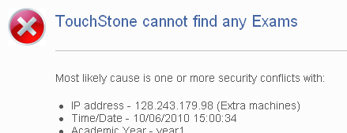

V přihlašovacím dialogu klikněte na tlačítko 'Zpět'. Na další obrazovce bude zpráva 'Přístup odepřen'. V dolní části je odkaz na 'Dočasný účet', klikněte na něj. Dostanete se k on-line formuláři a systém Vám přidělí dočasný účet a heslo. Přihlaste se pod tímto účtem a vykonejte zkoušku.
Pokud se jednomu či dvěma studentům dokument nezobrazí, poproste je, aby se opětovně přihlásili. Pokud dokument zkoušky nelze zobrazit celé učebně, zavolejte k získání pomoci na tísňové číslo.

Restartujte počítač, přihlaste opět na výše uvedené URL a následně klikněte na 'Restart>>' odkaz se nachází vedle času/data zobrazených předchozích pokusů. Ujistěte kandidáta, že na závěr lze získat, v případě potřeby, více času. Zeptejte se také, zda překontroloval, jestli jsou uloženy odpovědi v předchozích oknech dokumentu.
Uzavřete dokument pomocí Alt+F4; potom 'Restartujte' (na modré obrazovce); následně nechť kandidát překontroluje odpovědi v okně, kde došlo k závadě.
Použitím <ALT> and <TAB> v cyklu oken s dokumenty se okno znovu objeví. Pokud se dokument neobjeví, klikněte na 'Restart' na modré obrazovce.

Pro opětovné načtení obrázků přejděte na další okno a následně zpět. Pokud mají všichni studenti stejný problém, předejte zprávu správcům e-testování.

Vizuální varování naznačuje, že úloha nebyla doposud zodpovězena (je to tedy charakteristika, nikoliv problém).

Sdělte kandidátům, že mají kliknout na ikonu Nouzového opuštění  (je umístěn v každém rohu okna), poznamenejte si čas a informujte kandidáty, že doba trvání zkoušky bude o ztracený čas prodloužena. Pokud musí být učebna evakuována sdělte kandidátům, aby si pamatovali, u kterého počítače seděli, aby v případě návratu mohli ve zkoušce pokračovat.
(je umístěn v každém rohu okna), poznamenejte si čas a informujte kandidáty, že doba trvání zkoušky bude o ztracený čas prodloužena. Pokud musí být učebna evakuována sdělte kandidátům, aby si pamatovali, u kterého počítače seděli, aby v případě návratu mohli ve zkoušce pokračovat.
Přejděte na spodní část obrazovky a klikněte na tlačítko 'Pokračovat'.